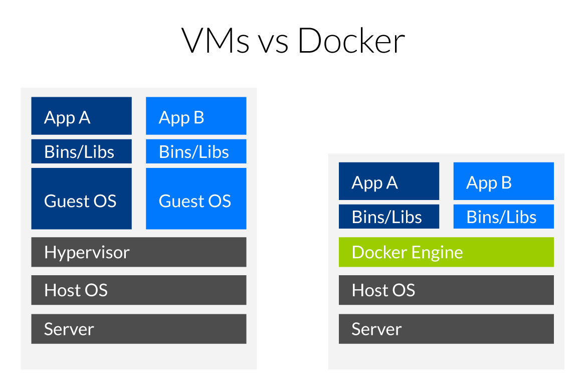

Install a Galaxy server with Docker
Installation of a Galaxy server with Docker¶
What is Docker ?¶

Virtual machines¶
Virtual machines (VMs) are an abstraction of physical hardware turning one server into many servers. The hypervisor allows multiple VMs to run on a single machine. Each VM includes a full copy of an operating system, one or more apps, necessary binaries and libraries - taking up tens of GBs. VMs can also be slow to boot.
Containers¶
Containers are an abstraction at the app layer that packages code and dependencies together. Multiple containers can run on the same machine and share the OS kernel with other containers, each running as isolated processes in user space. Containers take up less space than VMs (container images are typically tens of MBs in size), and start almost instantly.
A GalaxyKickStart Docker Container for the Analyse des génomes¶
Instead of using the GalaxyKickStart playbook in a VM, the playbook can be used to build a Docker container image that will be an almost exact mirror of the GalaxyKickStart VM you have just built.
You are not going to do that today (although you should be able to do it by reading the instructions).
Instead, you are going to
- Install the
dockersystem - pull the GalaxyKickStart docker container that is deposited in the
Docker Hub - run this docker container and connect to the deployed GalaxyKickStart server instance
Deployment¶
- There is actually no need for a new VM, the ansible already installed the docker service in the VM used to deploy GalaxyKickStart.
- If not already, be connected to you VM as root user using the Google ssh console (
sudo -i) - download the script
run_docker_analyse_genomes_2019.shusing the commandwget https://raw.githubusercontent.com/ARTbio/Run-Galaxy/master/deployment_scripts/run_docker_analyse_genomes_2019.sh - run the script using the command
sh run_docker_analyse_genomes_2019.sh - Connect to your docker-deployed "GalaxyKickStart" instance:
Just click on the url displayed in your Google Cloud Engine Console and connect using the login:password
admin@galaxy.org:admin
Shutdown on the docker container and clear disk space¶
- go back to your console
- type:
docker ps
- copy the docker id or the docker container name
- type the following command while replacing
with the copied content
docker stop <id or name> && docker rm <id or name>
- remove the docker image with the command
docker rmi artbio/analyse_genomes:2019
rm -rf /galaxy_export /galaxy_tmp
Info
Following this procedure you will recover about 50 Go of free disk space This is significant !
The run_docker_analyse_genomes_2019.sh script explained¶
run_docker_analyse_genomes_2019.sh
#!/usr/bin/env bash
# run `bash run_docker_analyse_genomes_2019`
set -e
echo "Now pulling the artbio/analyse_genomes:2019 docker image from DockerHub\n"
supervisorctl stop all
docker pull artbio/analyse_genomes:2019
echo "Running artbio/analyse_genomes:2019 docker container\n"
mkdir /galaxy_export /galaxy_tmp && chown 1450:1450 /galaxy_export /galaxy_tmp
export DOCKER_INSTANCE=`docker run -d -p 80:80 -p 21:21 -p 8800:8800 \
--privileged=true \
-e GALAXY_CONFIG_ALLOW_USER_DATASET_PURGE=True \
-e GALAXY_CONFIG_ALLOW_LIBRARY_PATH_PASTE=True \
-e GALAXY_CONFIG_ENABLE_USER_DELETION=True \
-e GALAXY_CONFIG_ENABLE_BETA_WORKFLOW_MODULES=True \
-v /galaxy_tmp:/tmp \
-v /galaxy_export:/export \
artbio/analyse_genomes:2019`
echo "The analyse_genomes:2019 docker container is deploying...\n"
echo "Press Ctrl-C to interrupt this log and start using the container...\n"
docker logs -f $DOCKER_INSTANCE
The run_docker_analyse_genomes_2019.sh script explained
- The shebang line. Says that it is a script code and that the interpreter to execute the code is sh and can be found in the /usr/bin/env environment
- a commented line to explain the script usage
set -esays to the bash interpreter to exit the run at first error (to avoid catastrophes)- prompts "Now pulling the galaxykickstart docker image from DockerHub"
- stop the galaxy services (galaxy, postgresql, slurm, nginx,...) that were deployed before with ansible (to liberate ports)
- Pulls (Downloads) the Docker Image specified as parameter to the
docker pullstatement (artbio/analyse_genomes:2019) - reports this action to the terminal
- creates the /galaxy_export and /galaxy_tmp directory to export automatically data produced by the docker container
docker image, and gives write rights to the container for these folders (
chown 1450:1450) -
the command invocation to run the docker container from the docker image
artbio/analyse_genomes:2019. Note the\at ends of lines 9 to 17: this character\specifies that the code line is continued without line break for the bash interpreter.- line 9 starts with an
export DOCKER_INSTANCE=instruction. This means that the result of the command between ` after the sign=will be put in the environmental variableDOCKER_INSTANCE, available system-wide.
Now, the docker command (between `) itself:
Still in line 9, we have
docker run -d -p 80:80 -p 21:21 -p 8800:8800.This means that a container will be run as a deamon (
-doption) and that the internal TCP/IP ports 80 (web interface) and 21 (ftp interface) of the docker instance will be mapped to the ports 80 and 21 of your machin (The VM in this case). Note that in the syntax-p 80:80, the host port is specified to the left of the:and the docker port is specified to the right of the:.-
line 10 specifies that the docker container acquires the root privileges
- line 11 sets the environmental variable
GALAXY_CONFIG_ALLOW_USER_DATASET_PURGEpassed (-exported) to the docker container to the valueTrue
- line 11 sets the environmental variable
-
line 12 sets the environmental variable
GALAXY_CONFIG_ALLOW_LIBRARY_PATH_PASTEtoTrue- line 13 sets the environmental variable
GALAXY_CONFIG_ENABLE_USER_DELETIONtoTrue - line 14 sets the environmental variable
GALAXY_CONFIG_ENABLE_BETA_WORKFLOW_MODULEStoTrue
- line 13 sets the environmental variable
Note that all these exports in the docker command correspond to advanced boiling/tuning of the docker container. You are not obliged to understand the details to get the container properly running.
-
line 15. -v stands for "volume". the
-voption says to export the /tmp directory of the docker container to the /galaxy_tmp directory of the host. -
line 16. we also export the /export directory of the container (any docker container has or should have by default an /export directory) to an /galaxy_export directory of the host (your VM here).
Note that if the /galaxy_export directory does not exists at docker run runtime, it will be created.
So it is important to understand the -v magics: every directory specified by the -v option will be shared between the docker container filesystem and the host filesystem. It is a mapping operation, so that the same directory is accessible either from inside the docker container or from the host.
If you stop and remove the docker container, all exported directory will persist in the host. If you don't do that, all operations performed with a container are lost when you stop this container.
- line 17. This is the end of the docker run command. The docker image to be instantiated is specified by $1 variable, the parameter passed to the script at runtime.
- line 9 starts with an
- reports to the terminal user
- wait 90 sec during the docker container deployment
- reports to the terminal user
- Now that the docker container is launched, you can access its logs with the command
docker logsfollowed by the identification number of the docker container. We have put this ID in the variableDOCKER_INSTANCEand we access to the content of this variable by prefixing the variable with a$:docker logs $DOCKER_INSTANCE